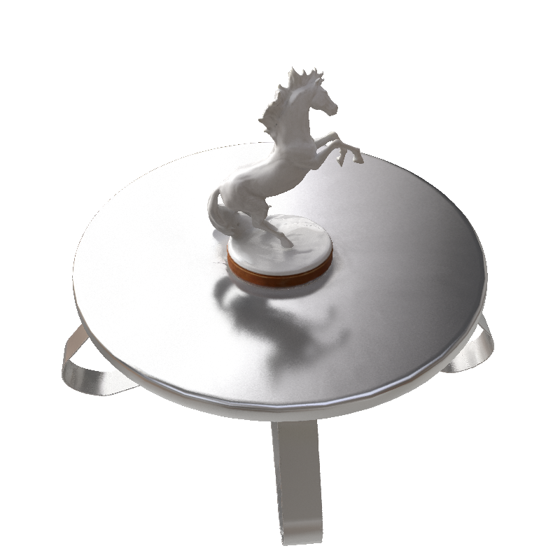

Albedo results and relighting results


Inverse rendering methods have achieved remarkable performance in reconstructing
high-fidelity 3D objects with disentangled geometries, materials, and environmental
light. However, they still face huge challenges in reflective surface reconstruction.
Although recent methods model the light trace to learn specularity, the ignorance
of indirect illumination makes it hard to handle inter-reflections among multiple
smooth objects.
In this work, we propose Ref-MC2 that introduces the multi
time Monte Carlo sampling which comprehensively computes the environmental
illumination and meanwhile considers the reflective light from object surfaces. To
address the computation challenge as the times of Monte Carlo sampling grow,
we propose a specularity-adaptive sampling strategy, significantly reducing the
computational complexity. Besides the computational resource, higher geometry
accuracy is also required because geometric errors accumulate multiple times.
Therefore, we further introduce a reflection-aware surface model to initialize the
geometry and refine it during inverse rendering. We construct a challenging dataset
containing scenes with multiple objects and inter-reflections. Experiments show
that our method outperforms other inverse rendering methods on various object
groups. We also show downstream applications, e.g., relighting and material
editing, to illustrate the disentanglement ability of our method.
@article{zhu2024multitimesmontecarlorendering,
author = {Tengjie Zhu and Zhuo Chen and Jingnan Gao and Yichao Yan and Xiaokang Yang},
title = {Multi-times Monte Carlo Rendering for Inter-reflection Reconstruction},
year = {2024},
eprint ={ 2407.05771},
archivePrefix={arXiv},
}